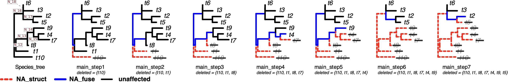
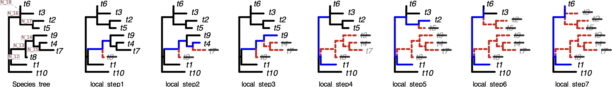

Catnip10
面向「把数值填写在固定或共享参考枝坐标轴上」的分枝级工作流的确定性一致性基准。10 个叶节点、17 条冻结的原始坐标——小到可以完整追踪，又足以检验每一项明确声明的坐标主张。
数值可以是对的，坐标却是错的
比较基因组学流程常把分枝级数值——演化速率、残差、路径长度——放进一个以参考树的分枝为列的矩阵。但这只有在一种前提下才有意义：一个列标签，在所有为它贡献数据的基因中，始终指向同一个演化对象。
各基因的类群覆盖不同，因此每棵基因树都是参考树的一次收缩。删掉一个叶节点，可能使某个内部节点只剩两个邻居；标准的树简约会抑制该节点，把与之相连的两条分枝合并成一条。合并后的分枝可以精确保留成员长度之和——算术毫无问题——但那两条原始分枝在这个基因里已经无法被分别观测。
如果流程把这个合并值写进以其中一条成员命名的格子里，数值是有效的，坐标却不是。程序不会崩溃，不会出现 NA，而任何只检查算术是否正确的检验都看不见它。
Catnip10 要守住的区分：复合分枝 {b₁,b₂} 本身是完全合法的估计对象——它可以是一条简约树上的分枝，也可以是一个明确声明的复合对象。但它不能被当作 b₁ 或 b₂ 的独立取值。端点定义的路径与简约树分枝都是正当的原生对象；只有当数值被放到共享的全树分枝轴上进行对齐、比较或解释时，这项要求才适用。
图论 oracle（graph oracle）：带成员溯源的图收缩
图论 oracle（graph oracle）是一个通过图删除、收缩和原始分枝成员归属传播，直接构造基准真值的小型图算法。因此，Catnip10 的真值对象是确定、精确且可逐格核验的，而不是从被审计工作流的输出中估计出来的。oracle 从不读取被审计工作流的输出。
- 冻结一棵参考树，把它的分枝枚举为原始坐标
B1…B17。每条分枝都是一个离散对象；移除它会在类群上诱导一个二分划分，这正是标签意义的来源。 - 对某个类群子集，删除缺失的叶节点，并反复抑制每一个度为 2 的顶点，把与之相连的两条分枝合并。这就是标准的树简约——任何流程都在隐式执行的同一种收缩。
- 在每一次抑制中传播原始分枝的成员归属。每条存活的简约分枝都携带它所吸收的原始分枝集合，合并时取两个成员集合的并集。不丢弃任何信息，溯源因此永不丢失。
- 按成员归属的去向对每条原始坐标分类：是某条存活分枝的唯一成员 →
observed；是含两条及以上成员的存活分枝的成员 →NA_fuse；不被任何存活分枝包含 →NA_struct。 - 输出两本相互关联的账本：为每条原始坐标分配恰好一个状态的原始坐标账本，以及按成员集合与长度之和登记每条存活复合分枝的复合分枝账本。
把同一套流程明确写出来。在收缩过程中被带下去的只有成员归属集合，三个状态不是沿途指派的，而是最后从它推导出来的。
Input:
weighted unrooted tree G = (V,E)
primitive label p(e) and length ℓ(e) for every reference edge
retained tip set S
Initialize:
M(e) = {p(e)}
Delete all tips not in S and their incident edges.
Repeat until no change:
if a non-tip vertex v has degree 1:
delete v and its incident edge # an entire clade has disappeared
if a non-tip vertex v has degree 2:
let e1=(u,v), e2=(v,w)
replace e1,e2,v by e*=(u,w)
M(e*) = M(e1) ∪ M(e2)
ℓ(e*) = ℓ(e1) + ℓ(e2)
For each surviving edge e:
compute its canonical unrooted split key
record [split key, M(e), ℓ(e)]
For each primitive coordinate b:
if some surviving edge has M(e) = {b}:
OBSERVED_PRIMITIVE
else if b ∈ M(e) for some surviving edge with |M(e)| > 1:
NA_FUSE
else:
NA_STRUCT
这个 oracle 最初是作为 SplitAligner 基准的独立验证层写出来的，也正是 Catnip10 的出生地。包含输入、脚本与审计输出的原始构造，放在 SplitAligner 的 benchmark 目录。
由于整个过程是确定且有限的，17 条坐标在任意类群子集下的期望状态都可以预先穷举——不需要模拟、不需要抽样，也不需要数值容差。对于适用该坐标契约且适配器已通过验证的工作流，与冻结 oracle 的不一致构成可审计的一致性偏差。
三种状态的适用范围：在这个固定拓扑的 toy core 中，observed、NA_fuse 和 NA_struct 互斥且完备。这是本基准设计的性质，并不是对所有异质树工作流的一般性断言。拓扑导致的缺失被有意排除在固定拓扑 core 之外，因此这三种状态并不构成其他工作流的完整状态分类体系。
三种状态，以及各自允许什么
整个审计的关键，在于把流程习惯性混为一谈的两类缺失分开。一条消失的分枝和一条被融合的分枝不是同一回事，下游处理方式也不同。
| 状态 | 这条坐标发生了什么 | 该格中的数值意味着什么 |
|---|---|---|
| observed | 原始分枝在收缩后作为独立的一条分枝存活，没有其他原始分枝并入其中。 | 合法。该格可以承载这条具名分枝的独立取值。 |
| NA_fuse | 该分枝只在复合分枝内部存活，且至少与另一条原始分枝同在。复合分枝的长度是各成员长度的精确之和。 | 不具备独立坐标资格。这里的任何数值都属于复合分枝，而非这条成员分枝。数值可以在算术上完全精确，归属却是错的。 |
| NA_struct | 该分枝结构性缺失：在这个类群子集下，没有任何存活分枝包含它。 | 未定义。该格没有可以指涉的演化对象。注意，零不属于这一类——零表示一个被实际观测到的零值状态。 |
公开表格中的名称：机器可读的真值表把这三种状态写作 OBSERVED_PRIMITIVE、NA_FUSE、NA_STRUCT；本页与图中使用的简写指的是完全相同的状态。契约中另有 NA_TOPO，保留给拓扑导致的缺失，固定拓扑的剪枝 core 不会产生该状态。
最后一行为什么在实践中重要：写入结构性不可用格子的数值零，可以通过常规缺失值过滤；如果不显式校验坐标状态，它就可能在下游被当作一个实际观测到的零。缺失编码描述的是坐标状态，而不是软件失败。区分 NA_struct 与真实观测零，是一个坐标层面的问题，单靠数值校验无法回答。
轴 A — 剪枝感知的坐标资格
第一条有效性轴只问一件事：剪枝与收缩之后，这个数值是否仍可作为其所填入原始全树坐标的独立取值？
在这一剪枝实验中，拓扑和枝长保持固定；不引入真实速率变化、基因树与物种树不一致、枝长估计误差或物种树不确定性。唯一施加的扰动是类群删除，以及由此产生的度为 2 节点抑制。因此，在这一实验内部，剪枝是解释坐标状态变化的唯一实验因素。Catnip10 还包含另一套表示对照，用于检验完全不同的问题，见下方轴 B。
两条预先规定的删除序列给出对照鲜明的几何：一条是从显示根一侧向内推进的渐进全局序列，另一条是把删除集中在单个演化支内的局部序列。每条各 8 步（含基线）。由于树很小，oracle 还能穷举可删叶节点的所有子集下每条坐标的期望状态——下方交互面板驱动的正是这一点。
适用范围：这是一个确定性的存在性与机制性设计。它表明仅凭剪枝就能把数值有效性与坐标资格分离开，并使这种分离可被检验。它不是现实数据中此类不一致发生率的估计，也不能单凭这一实验推断真实分析中的基因层面偏倚。
轴 B — 表示变化下稳定的坐标身份与可用性
第二条有效性轴不改变任何生物学对象。它检验的是：当同一棵树采用另一种数学等价的表示方式时，同一条规范化无根 split 是否仍保持相同的坐标身份和声明的可用状态。
显示根（display root）：树在序列化或遍历时采用的根位置。它不是权威无根分枝身份的一部分；分枝身份仍由规范化 split key 确定。
这些表示被构造成严格等价：类群集合相同、规范化无根 split 集相同、对应 split 的枝长也相同。改变的只有树的表示方式。
原生表示
- 基线序列化
- 显示根不变
所有对照据以比较的基准点。
序列化 / 子节点顺序对照
- 严格等价的无根树
- 子节点顺序改变
- 显示根不变
与检验目标无关的表示变化阴性对照。与坐标身份有关的数学对象没有改变，因此输出不应发生变化。
显示根位移挑战
- 严格等价的无根树
- 相同叶节点、相同无根 split
- 相同的 split 特异枝长
- 显示根确实移动了
真正的挑战：带权无根树对象保持不变，但用于序列化的显示根移动到了另一个顶点。
Newick 字符串发生变化，并不意味着被检验的表示变量真的发生了变化。重写一棵树可能改变字节、改变子节点顺序，或两者都改，却完全没有移动显示根。因此 Catnip10 把显示根签名定义为「与序列化根顶点相邻的叶集合的无序划分」，并在对任何参与者进行本轴评分之前，独立认证该签名是否真的发生了变化。若请求移动显示根却只产生了重排，该情形会作为 no-op 回归对照保留下来，使一次基准运行无法把自己从未真正施加的挑战悄悄记为已完成。
子节点顺序的变动是阴性对照，不是被预期的失效模式。本页任何表述都不应被读作「重排子节点通常会破坏工作流」的主张。
四种判定
审计一个工作流是一套机械流程：把某一个输出层归一化到适配器契约，声明该输出层是否受这一坐标契约约束（exposure），然后由评分器逐格与 oracle 账本比对。结果是四种判定之一，而其中只有一种是失败。
PASS
该工作流适用被检验的坐标契约，并满足规定的基准条件。
FAIL
该工作流适用被检验的坐标契约，但违反了规定的基准条件。
NOT-EXPOSED
该工作流声明的原生估计对象并不承诺被检验的坐标契约，因此该契约不适用。这是一项明确的判定，不是「数据缺失」的委婉说法。
UNRESOLVED
所需证据或有效的检验前提不可得，因此基准无法在任一方向上作出裁定。
FAIL 是针对什么的：判定针对的是某个特定接口上被声明的主张，而不是整个软件包。当一个原生的端点或路径对象从未主张过原始轴对齐时，它不会被判为原始轴 FAIL。适配器校验又是另一回事：缺少应有的行是输入错误，而不是 NOT-EXPOSED。
诊断性定位：它不是一种判定，而是基准的一种用途。当存在可复现的失败时，可以用 Catnip10 追踪坐标身份或可用性最先发生分歧的那个表示边界。
匿名案例研究 — 一次一致性审计是什么样子
两个分枝级工作流使用全局序列中的同一批剪枝输入运行，并按照各自明确声明的 exposure，将输出映射到冻结坐标轴上进行审计。参与者身份在公开版本中不予披露；确切身份、版本、适配器与执行溯源均保存在封存档案中。此处分别记为 Method A 和 Method B。
有一点需要先说明，它是以下结果的前提：两个工作流的原生路径算术均为精确值。这里没有任何关于谁把距离算错了的主张。审计考察的是这些正确的数值被填到了哪里。
本案例展示的是剪枝资格这条轴。表示变化下的稳定性由轴 B 的严格等价对照单独检验。
从显示根一侧开始的七步渐进删除。每棵树显示收缩对各条坐标做了什么：红色虚线表示坐标结构性缺失，蓝色表示只在复合分枝内部存活，黑色表示未受影响。

独立的图论 oracle（graph oracle）给出每一步中每条原始坐标的期望状态。这就是参与者被据以评分的真值对象。
| 坐标 | t10 | N_12 | t1 | N_13 | t8 | N_14 | N_15 | t7 | t4 | t9 | N_16 | N_17 | t5 | t2 | N_18 | t3 | t6 |
|---|---|---|---|---|---|---|---|---|---|---|---|---|---|---|---|---|---|
| 参考树 | 1.464364 | 0.138710 | 0.988892 | 0.946668 | 0.082438 | 0.514212 | 0.390203 | 0.905738 | 0.446970 | 0.836004 | 0.737596 | 0.811055 | 0.388108 | 0.685170 | 0.003948 | 0.832916 | 0.007334 |
| main_step1 | NA_struct | NA_fuse | 0.988892 | 0.946668 | 0.082438 | 0.514212 | 0.390203 | 0.905738 | 0.446970 | 0.836004 | NA_fuse | 0.811055 | 0.388108 | 0.685170 | 0.003948 | 0.832916 | 0.007334 |
| main_step2 | NA_struct | NA_fuse | NA_struct | NA_fuse | 0.082438 | 0.514212 | 0.390203 | 0.905738 | 0.446970 | 0.836004 | NA_fuse | 0.811055 | 0.388108 | 0.685170 | 0.003948 | 0.832916 | 0.007334 |
| main_step3 | NA_struct | NA_fuse | NA_struct | NA_fuse | NA_struct | NA_fuse | 0.390203 | 0.905738 | 0.446970 | 0.836004 | NA_fuse | 0.811055 | 0.388108 | 0.685170 | 0.003948 | 0.832916 | 0.007334 |
| main_step4 | NA_struct | NA_fuse | NA_struct | NA_fuse | NA_struct | NA_fuse | NA_fuse | NA_struct | NA_fuse | 0.836004 | NA_fuse | 0.811055 | 0.388108 | 0.685170 | 0.003948 | 0.832916 | 0.007334 |
| main_step5 | NA_struct | NA_fuse | NA_struct | NA_fuse | NA_struct | NA_fuse | NA_struct | NA_struct | NA_struct | NA_fuse | NA_fuse | 0.811055 | 0.388108 | 0.685170 | 0.003948 | 0.832916 | 0.007334 |
| main_step6 | NA_struct | NA_struct | NA_struct | NA_struct | NA_struct | NA_struct | NA_struct | NA_struct | NA_struct | NA_struct | NA_struct | NA_fuse | 0.388108 | 0.685170 | NA_fuse | 0.832916 | 0.007334 |
| main_step7 | NA_struct | NA_struct | NA_struct | NA_struct | NA_struct | NA_struct | NA_struct | NA_struct | NA_struct | NA_struct | NA_struct | NA_fuse | NA_struct | NA_fuse | NA_fuse | 0.832916 | 0.007334 |
Method A 声明了一个固定/共享的原始分枝坐标层，因此资格契约对它适用。高亮的格子是这个冻结基准配置下的坐标状态不一致：要么 oracle 记为可独立观测的坐标返回了 NA，要么一个完整的复合路径量占据了因融合而不具资格的格子。
| 步骤 | t10 | N_12 | t1 | N_13 | t8 | N_14 | N_15 | t7 | t4 | t9 | N_16 | N_17 | t5 | t2 | N_18 | t3 | t6 |
|---|---|---|---|---|---|---|---|---|---|---|---|---|---|---|---|---|---|
| 参考树 | 1.464364 | 0.138710 | 0.988892 | 0.946668 | 0.082438 | 0.514212 | 0.390203 | 0.905738 | 0.446970 | 0.836004 | 0.737596 | 0.811055 | 0.388108 | 0.685170 | 0.003948 | 0.832916 | 0.007334 |
| main_step1 | NA | NA | NA | NA | 0.082438 | 0.514212 | 0.390203 | 0.905738 | 0.446970 | 0.836004 | 0.876306 | 0.811055 | 0.388108 | 0.685170 | 0.003948 | 0.832916 | 0.007334 |
| main_step2 | NA | NA | NA | NA | NA | NA | 0.390203 | 0.905738 | 0.446970 | 0.836004 | 1.822974 | 0.811055 | 0.388108 | 0.685170 | 0.003948 | 0.832916 | 0.007334 |
| main_step3 | NA | NA | NA | NA | NA | NA | NA | 0.905738 | 0.446970 | NA | 2.337186 | 0.811055 | 0.388108 | 0.685170 | 0.003948 | 0.832916 | 0.007334 |
| main_step4 | NA | NA | NA | NA | NA | NA | NA | NA | NA | NA | 2.337186 | 0.811055 | 0.388108 | 0.685170 | 0.003948 | 0.832916 | 0.007334 |
| main_step5 | NA | NA | NA | NA | NA | NA | NA | NA | NA | NA | NA | NA | 0.388108 | 0.685170 | NA | 0.832916 | 0.007334 |
| main_step6 | NA | NA | NA | NA | NA | NA | NA | NA | NA | NA | NA | NA | NA | NA | 0.815003 | 0.832916 | 0.007334 |
| main_step7 | NA | NA | NA | NA | NA | NA | NA | NA | NA | NA | NA | NA | NA | NA | NA | NA | NA |
进入 NA_fuse 格的复合路径量
N_16: 0.876306 = N_12|N_16 · 1.822974 = N_13|N_12|N_16 · 2.337186 = N_14|N_13|N_12|N_16
N_18: 0.815003 = N_17|N_18
该冻结配置下的结果
13 处 oracle 判为 observed 的坐标脱落
5 处完整复合量占据融合不合格的格子
这是该冻结 toy 配置下的审计结果示例，既不是软件错误率，也不是发生率估计。
对此处展示的原始轴契约而言属于 NOT-EXPOSED。Method B 的原生对象与端点和路径相关联，并不等价于原始枝长矩阵，也从未主张过。被标记的格子不是错误。它们展示的是：一个正当的原生对象被投影到冻结原始轴上时会呈现什么样子——多数是端点分割下复合量的一半，或是被归给单个端点的整个复合量。
| 步骤 | t10 | N_12 | t1 | N_13 | t8 | N_14 | N_15 | t7 | t4 | t9 | N_16 | N_17 | t5 | t2 | N_18 | t3 | t6 |
|---|---|---|---|---|---|---|---|---|---|---|---|---|---|---|---|---|---|
| 原生基线 | 0.732182 | 0.138710 | 0.988892 | 0.946668 | 0.082438 | 0.514212 | 0.390203 | 0.905738 | 0.446970 | 0.836004 | 0.737596 | 0.811055 | 0.388108 | 0.685170 | 0.003948 | 0.832916 | 0.007334 |
| main_step1 | NA | 0.438153 | 0.988892 | 0.946668 | 0.082438 | 0.514212 | 0.390203 | 0.905738 | 0.446970 | 0.836004 | 0.438153 | 0.811055 | 0.388108 | 0.685170 | 0.003948 | 0.832916 | 0.007334 |
| main_step2 | NA | NA | NA | 0.911487 | 0.082438 | 0.514212 | 0.390203 | 0.905738 | 0.446970 | 0.836004 | 0.911487 | 0.811055 | 0.388108 | 0.685170 | 0.003948 | 0.832916 | 0.007334 |
| main_step3 | NA | NA | NA | NA | NA | 1.168593 | 0.390203 | 0.905738 | 0.446970 | 0.836004 | 1.168593 | 0.811055 | 0.388108 | 0.685170 | 0.003948 | 0.832916 | 0.007334 |
| main_step4 | NA | NA | NA | NA | NA | NA | NA | NA | 0.837173 | 0.836004 | 1.168593 | 0.811055 | 0.388108 | 0.685170 | 0.003948 | 0.832916 | 0.007334 |
| main_step5 | NA | NA | NA | NA | NA | NA | NA | NA | NA | 1.586595 | 1.586595 | 0.811055 | 0.388108 | 0.685170 | 0.003948 | 0.832916 | 0.007334 |
| main_step6 | NA | NA | NA | NA | NA | NA | NA | NA | NA | NA | NA | 0.407502 | 0.388108 | 0.685170 | 0.407502 | 0.832916 | 0.007334 |
| main_step7 | NA | NA | NA | NA | NA | NA | NA | NA | NA | NA | NA | NA | NA | 0.750087 | 0.750087 | 0.832916 | 0.007334 |
端点分割投影
N_16 & N_12: 0.438153 = (N_12|N_16)/2 · N_13 & N_16: 0.911487 = (N_13|N_12|N_16)/2
N_14 & N_16: 1.168593 = (N_14|N_13|N_12|N_16)/2 · N_17 & N_18: 0.407502 = (N_17|N_18)/2
t9 & N_16: 1.586595 = (t9|N_14|N_13|N_12|N_16)/2 · t2 & N_18: 0.750087 = (t2|N_17|N_18)/2
单端点完整投影
t4: 0.837173 = t4|N_15
基线行在 t10 处的差异同样源自构造：端点分割会把与显示根相邻的那条分枝对半分。
把 C 和 D 放在一起读：输入相同、算术相同，填写行为不同，判定也不同——因为这两个方法主张的东西本就不同。这个区分，任何只比较数值的检验都得不到；它需要坐标账本和明确声明的 exposure，而这正是两者存在的理由。
全局序列从显示根一侧向内删除。局部序列删除同样数量的类群，但集中在单个演化支内部，因此融合与结构性缺失落在完全不同的位置。其余一切都相同：同一棵参考树、同一条冻结轴、同样声明的 exposure、同一套审计。

同一个图论 oracle，在局部类群子集上运行。请注意这份账本与全局那份差别有多大：融合的坐标与消失的坐标几乎是两组不同的集合。
| 坐标 | t10 | N_12 | t1 | N_13 | t8 | N_14 | N_15 | t7 | t4 | t9 | N_16 | N_17 | t5 | t2 | N_18 | t3 | t6 |
|---|---|---|---|---|---|---|---|---|---|---|---|---|---|---|---|---|---|
| 参考树 | 1.464364 | 0.138710 | 0.988892 | 0.946668 | 0.082438 | 0.514212 | 0.390203 | 0.905738 | 0.446970 | 0.836004 | 0.737596 | 0.811055 | 0.388108 | 0.685170 | 0.003948 | 0.832916 | 0.007334 |
| local_step1 | 1.464364 | 0.138710 | 0.988892 | NA_fuse | NA_struct | NA_fuse | 0.390203 | 0.905738 | 0.446970 | 0.836004 | 0.737596 | 0.811055 | 0.388108 | 0.685170 | 0.003948 | 0.832916 | 0.007334 |
| local_step2 | 1.464364 | 0.138710 | 0.988892 | NA_fuse | NA_struct | NA_fuse | NA_fuse | NA_struct | NA_fuse | 0.836004 | 0.737596 | 0.811055 | 0.388108 | 0.685170 | 0.003948 | 0.832916 | 0.007334 |
| local_step3 | 1.464364 | 0.138710 | 0.988892 | NA_fuse | NA_struct | NA_fuse | NA_struct | NA_struct | NA_struct | NA_fuse | 0.737596 | 0.811055 | 0.388108 | 0.685170 | 0.003948 | 0.832916 | 0.007334 |
| local_step4 | 1.464364 | NA_fuse | NA_fuse | NA_struct | NA_struct | NA_struct | NA_struct | NA_struct | NA_struct | NA_struct | 0.737596 | 0.811055 | 0.388108 | 0.685170 | 0.003948 | 0.832916 | 0.007334 |
| local_step5 | 1.464364 | NA_fuse | NA_fuse | NA_struct | NA_struct | NA_struct | NA_struct | NA_struct | NA_struct | NA_struct | 0.737596 | NA_fuse | NA_struct | NA_fuse | 0.003948 | 0.832916 | 0.007334 |
| local_step6 | 1.464364 | NA_fuse | NA_fuse | NA_struct | NA_struct | NA_struct | NA_struct | NA_struct | NA_struct | NA_struct | NA_fuse | NA_struct | NA_struct | NA_struct | NA_fuse | 0.832916 | 0.007334 |
| local_step7 | 1.464364 | NA_fuse | NA_fuse | NA_struct | NA_struct | NA_struct | NA_struct | NA_struct | NA_struct | NA_struct | NA_fuse | NA_struct | NA_struct | NA_struct | NA_fuse | NA_struct | NA_fuse |
同一个暴露工作流、同一份固定轴契约，而这一次没有任何一格与 oracle 不一致。凡 oracle 记为可独立观测的坐标都带着数值，凡不具资格的格子都是空的。七步全程没有需要高亮的格子。
| 步骤 | t10 | N_12 | t1 | N_13 | t8 | N_14 | N_15 | t7 | t4 | t9 | N_16 | N_17 | t5 | t2 | N_18 | t3 | t6 |
|---|---|---|---|---|---|---|---|---|---|---|---|---|---|---|---|---|---|
| 参考树 | 1.464364 | 0.138710 | 0.988892 | 0.946668 | 0.082438 | 0.514212 | 0.390203 | 0.905738 | 0.446970 | 0.836004 | 0.737596 | 0.811055 | 0.388108 | 0.685170 | 0.003948 | 0.832916 | 0.007334 |
| local_step1 | 1.464364 | 0.138710 | 0.988892 | NA | NA | NA | 0.390203 | 0.905738 | 0.446970 | 0.836004 | 0.737596 | 0.811055 | 0.388108 | 0.685170 | 0.003948 | 0.832916 | 0.007334 |
| local_step2 | 1.464364 | 0.138710 | 0.988892 | NA | NA | NA | NA | NA | NA | 0.836004 | 0.737596 | 0.811055 | 0.388108 | 0.685170 | 0.003948 | 0.832916 | 0.007334 |
| local_step3 | 1.464364 | 0.138710 | 0.988892 | NA | NA | NA | NA | NA | NA | NA | 0.737596 | 0.811055 | 0.388108 | 0.685170 | 0.003948 | 0.832916 | 0.007334 |
| local_step4 | 1.464364 | NA | NA | NA | NA | NA | NA | NA | NA | NA | 0.737596 | 0.811055 | 0.388108 | 0.685170 | 0.003948 | 0.832916 | 0.007334 |
| local_step5 | 1.464364 | NA | NA | NA | NA | NA | NA | NA | NA | NA | 0.737596 | NA | NA | NA | 0.003948 | 0.832916 | 0.007334 |
| local_step6 | 1.464364 | NA | NA | NA | NA | NA | NA | NA | NA | NA | NA | NA | NA | NA | NA | 0.832916 | 0.007334 |
| local_step7 | 1.464364 | NA | NA | NA | NA | NA | NA | NA | NA | NA | NA | NA | NA | NA | NA | NA | NA |
无不一致格
0 处 oracle 判为 observed 的坐标脱落
0 处复合量占据融合不合格的格子
同一实现、同一坐标契约、不同的预设剪枝配置。
它认证了什么
只认证这一种配置。局部序列下干净，并不说明全局序列如何；反过来，全局序列的结果也不说明这一序列如何。
对原始轴契约而言依然属于 NOT-EXPOSED。估计对象的边界没有移动，但投影特征变了：几何不同，被标记的格子也是另一组，其中包括进入融合不合格格子的单端点完整投影。
| 步骤 | t10 | N_12 | t1 | N_13 | t8 | N_14 | N_15 | t7 | t4 | t9 | N_16 | N_17 | t5 | t2 | N_18 | t3 | t6 |
|---|---|---|---|---|---|---|---|---|---|---|---|---|---|---|---|---|---|
| 原生基线 | 0.732182 | 0.138710 | 0.988892 | 0.946668 | 0.082438 | 0.514212 | 0.390203 | 0.905738 | 0.446970 | 0.836004 | 0.737596 | 0.811055 | 0.388108 | 0.685170 | 0.003948 | 0.832916 | 0.007334 |
| local_step1 | 0.732182 | NA | 0.988892 | NA | NA | 1.460880 | 0.390203 | 0.905738 | 0.446970 | 0.836004 | 0.737596 | 0.811055 | 0.388108 | 0.685170 | 0.003948 | 0.832916 | 0.007334 |
| local_step2 | 0.732182 | NA | 0.988892 | NA | NA | NA | NA | NA | 0.837173 | 0.836004 | 0.737596 | 0.811055 | 0.388108 | 0.685170 | 0.003948 | 0.832916 | 0.007334 |
| local_step3 | 0.732182 | NA | 0.988892 | NA | NA | NA | NA | NA | NA | 2.296884 | 0.737596 | 0.811055 | 0.388108 | 0.685170 | 0.003948 | 0.832916 | 0.007334 |
| local_step4 | 0.732182 | NA | 1.127602 | NA | NA | NA | NA | NA | NA | NA | 0.737596 | 0.811055 | 0.388108 | 0.685170 | 0.003948 | 0.832916 | 0.007334 |
| local_step5 | 0.732182 | NA | 1.127602 | NA | NA | NA | NA | NA | NA | NA | NA | NA | NA | 1.496225 | 0.003948 | 0.832916 | 0.007334 |
| local_step6 | 0.732182 | NA | 1.127602 | NA | NA | NA | NA | NA | NA | NA | NA | NA | NA | NA | 0.741544 | 0.832916 | 0.007334 |
| local_step7 | 0.732182 | NA | 1.127602 | NA | NA | NA | NA | NA | NA | NA | NA | NA | NA | NA | NA | NA | 0.748878 |
坐标不具资格的原生距离
t1: 1.127602 = t1|N_12 · N_14: 1.460880 = N_14|N_13 · t4: 0.837173 = t4|N_15
t9: 2.296884 = t9|N_13|N_14 · t2: 1.496225 = t2|N_17 · N_18: 0.741544 = N_18|N_16
t6: 0.748878 = t6|N_18|N_16
投影中的可用性
4 处 oracle 判为 observed 的坐标在审计投影中不可用
基线在 t10 处的差异同样源自构造：端点分割会把与显示根相邻的边对半分。
为什么两套序列都要给。一个工作流在某种剪枝几何下满足契约，并不等于它在另一种几何下也满足。这里同一个暴露实现在全局序列下与 oracle 不一致，在局部序列下则完全一致——原因只是融合的坐标不同，而一个工作流完全可能正确处理一种融合模式、却处理错另一种。只认证一套序列并由此推广，正是这个基准要防止的推断。两套序列都随基准发布，原因就在这里。
动手探索 oracle
删除叶节点，看账本如何变化。显示的每个状态都是 oracle 对该类群子集给出的精确答案——选中一条分枝，可以看到哪些坐标与它融合在一起，哪些彻底消失。
SplitAligner 构建坐标，Catnip10 检验坐标
SplitAligner 构建并解释这套分枝坐标框架：它利用投影后的物种树 split 定义分枝身份，并区分不同的分枝缺失状态。Catnip10 检验一个实现是否保持了被声明的坐标契约。两者回答不同的问题，互不替代。
Catnip10 是在 SplitAligner 的验证生态中开发出来的——独立真值对象的需求正是在那里变得具体。它的 oracle 与评分契约与实现无关：真值层由图收缩推导得出，而不是去问 SplitAligner 答案应该是什么。SplitAligner 是该框架的参考基础设施，既不是基准的 oracle，也不是任何参与者的身份。
如果你想了解坐标系本身——投影 split 如何定义分枝身份、缺失如何被分解——请从图解和教程开始。
给你自己的工作流打分
要接受评分，你不需要公开自己的实现。把某一个输出层归一化到长表适配器契约，声明该层的 exposure，然后运行评分器即可。公开仓库提供规范文档、冻结的基准输入、oracle 真值表与复合账本、机器可读的表格 schema、方法无关的评分引擎、一个合成适配器示例，以及匿名化的归一化参与者输出。参与者专属的适配器、源码版本与执行命令不公开，因为它们会暴露参与者身份。
# 轴 A —— 为适用固定/共享原始层的工作流打分
python3 tools/score_participant.py \
--truth oracle/primitive_truth_tables/global_truth.tsv \
--input tutorial/example_scoring/pass_output.tsv \
--exposure tutorial/example_scoring/pass_exposure.tsv \
--cell-output /tmp/catnip10_cells.tsv \
--summary-output /tmp/catnip10_summary.tsv
# 轴 B —— 先认证严格等价，再评分
python3 tools/certify_representations.py \
--manifest benchmark/representation_controls/representation_manifest.tsv \
--output /tmp/catnip10_representation_certification.tsv
python3 tools/score_representation.py \
--namespace benchmark/reference_tree/branch_namespace.tsv \
--baseline-output tutorial/example_representation_scoring/rep_pass_baseline.tsv \
--equivalent-output tutorial/example_representation_scoring/rep_pass_equivalent.tsv \
--certification /tmp/catnip10_representation_certification.tsv \
--representation-id display_root_shift_true \
--exposure tutorial/example_representation_scoring/rep_pass_exposure.tsv \
--cell-output /tmp/catnip10_rep_cells.tsv \
--summary-output /tmp/catnip10_rep_summary.tsv
# 契约与匿名性检查
python3 -m unittest discover -s tests -v
轴 A 在评分前要求提供完整的规范化 key 集合：缺失、重复、未知或不一致的 crosswalk 行属于适配器校验错误，而不是参与者结果。轴 B 在为参与者评分前要求一份独立计算的认证记录，然后按规范化 split identity 对齐输出。合成的 PASS、FAIL、NOT-EXPOSED、真实位移与仅序列化 no-op 各种情形，都由测试套件覆盖。权威的数值资产是 TSV 文件；渲染出的文档与图是视图，不是真值来源。
关于引用：SplitAligner 与 Catnip10 都建立在两篇论文之上，引用时应同时引这两篇：坐标构建框架引 SplitAligner 正文，分枝身份的定义、以及 oracle 所计算的坐标—状态账本的唯一性，引 图论真值表。两者目前均为预印本。若直接使用基准材料本身，可另外注明 Catnip10 仓库。以 MIT 许可发布。